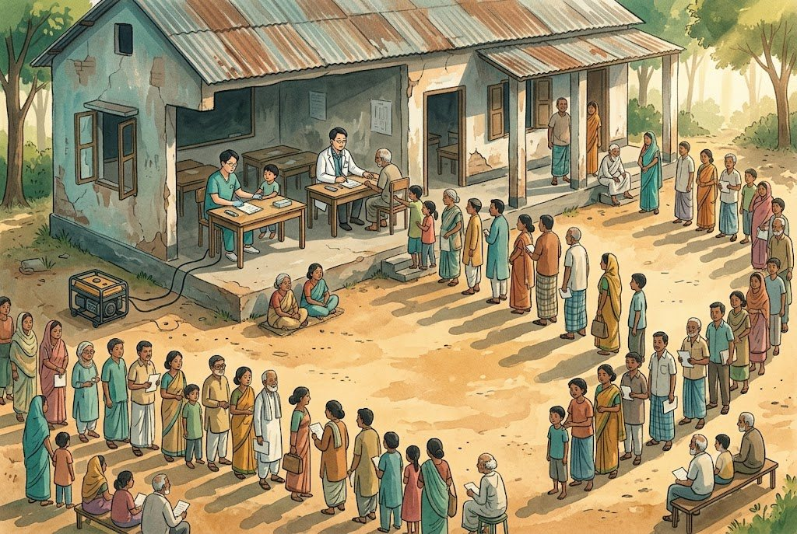
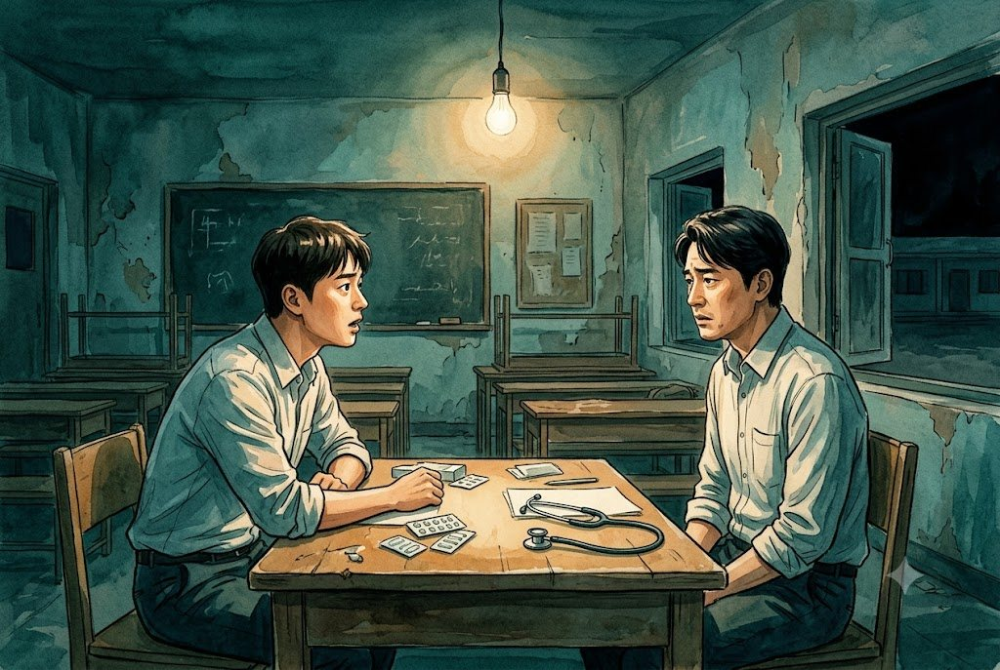
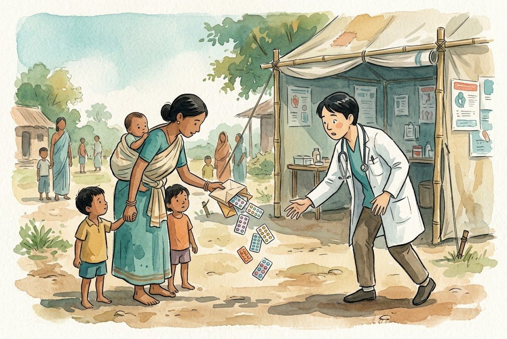
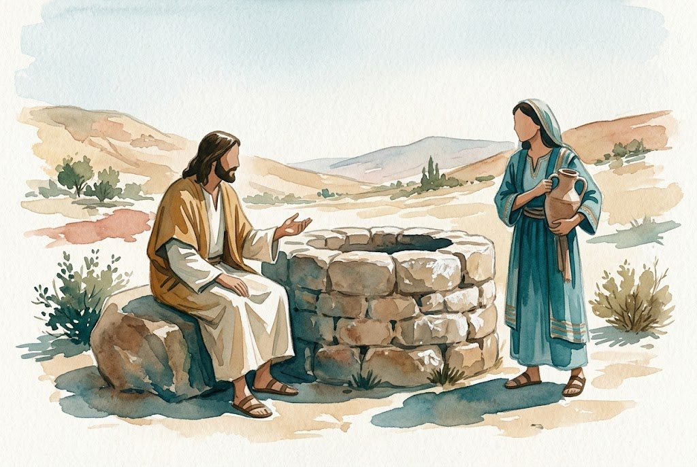
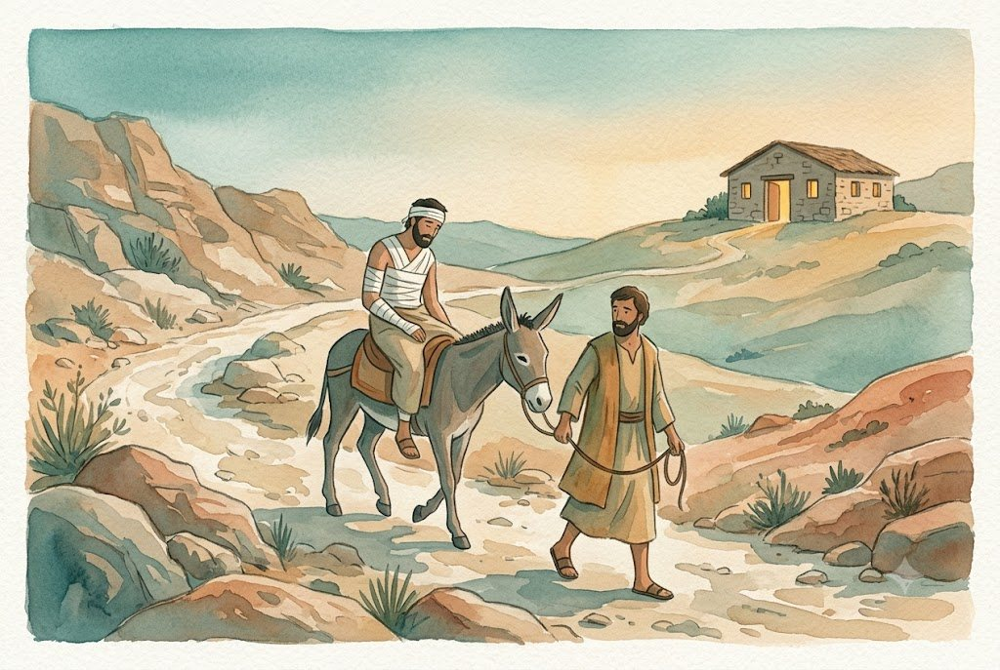
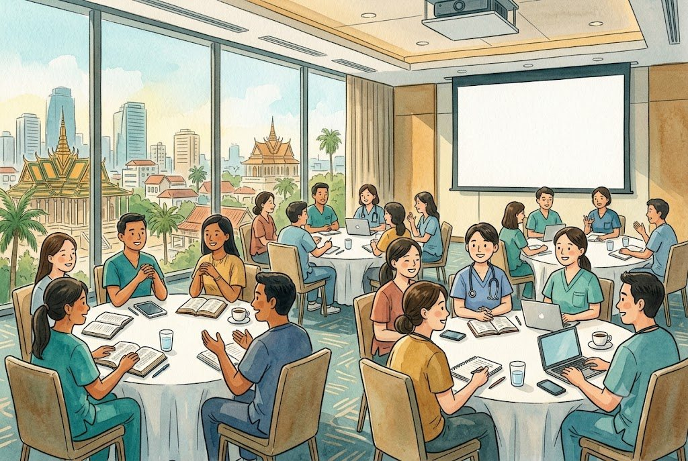

— 도우러 가는 길에서 함께 걷는 길로
이상협집사 · 가정의학과 전문의 (M.D., M. Div.)
이 글은 지역교회 의료선교부의 비전 세미나에 드리는 글입니다. 그러나 특정 교회의 이야기로 쓰지 않았습니다. 단기 의료팀을 보내는 어느 교회·단체가 읽어도 자기 이야기가 되도록 썼습니다. 사례에 나라 이름을 붙이지 않은 곳이 있습니다. 부정적인 장면에 특정 지역의 이름을 붙이면, 그 장면의 책임이 그곳에 있는 것처럼 읽히기 때문입니다. 그 책임은 간 사람에게 있습니다. 다만 법령과 통계처럼 출처가 분명한 공적 사실은 나라 이름을 그대로 적었습니다. 세미나 발표 내용을 인용한 곳은 교회 이름을 A~E로 가렸습니다. 대상국과 내용은 그대로입니다.
그의 안에서 건물마다 서로 연결하여 주 안에서 성전이 되어 가고 너희도 성령 안에서 하나님이 거하실 처소가 되기 위하여 그리스도 예수 안에서 함께 지어져 가느니라 — 에베소서 2장 21~22절
여는 글 — 이십 년 된 질문 하나
2000년대 초의 일입니다. 남아시아의 한 농촌에 의료팀으로 갔습니다. 그곳을 개척하려던 선교사가 길을 여는 데 도움이 되겠다며 단기 의료선교를 청한 자리였습니다. 그 선교사는 의료인이 아니었습니다.
전문의 두 사람이 아침 여덟 시에 진료를 시작했고, 환자는 끊이지 않았습니다. 현장의 부탁으로 발전기까지 돌려 가며 자정까지 보았습니다. 그날 본 환자가 칠백 명을 넘었습니다. 의사 한 사람이 삼백오십 명씩입니다. 열여섯 시간을 쉬지 않고 보았다고 쳐도 한 사람에게 돌아간 시간은 삼 분이 되지 않습니다.

석 달 뒤, 그 선교사가 그 마을에 계속 드나들게 되었는지 궁금해 소식을 물었습니다. 돌아온 이야기는 뜻밖이었습니다. 그날 진료받은 사람 가운데 두 사람이 그 뒤 탈이 나 응급실에 갔고, 선교사를 찾아와 소동을 벌였습니다. 선교사는 돈을 주고서야 일을 수습했고, 그 마을에 들어가기가 곤란해졌습니다.
그 두 사람의 탈이 우리가 준 약 때문이었는지는 지금도 알지 못합니다. 알 길이 없었다는 것이 문제의 한가운데입니다. 우리는 병력을 제대로 듣지 못했고, 검사를 하지 못했고, 다시 볼 수 없는 사람들에게 약을 건넸습니다. 그 뒤에 무슨 일이 있었는지는 석 달이 지나, 그것도 다른 일을 묻다가 알았습니다. 묻지 않았다면 그날은 제게 칠백 명을 섬긴 날로 남았을 것입니다. 문을 열려고 간 자리에서 우리는 문을 닫고 돌아온 셈입니다.
비슷한 무렵, 함께 다녀온 후배가 제게 물었습니다.
선생님, 우리 진료실에서라면 하지 않을 진료의 형태를 여기서는 이렇게 해도 되는 건가요? 이것이 선교라고 할 수 있나요?
저는 답하지 못했습니다.

더는 이렇게 할 수 없겠다고 마음먹게 한 장면은 따로 있습니다. 한 어머니가 네 아이를 데리고 진료를 받으러 왔습니다. 한 아이는 등에 업고, 나머지는 손을 잡고 있었습니다. 약국에서 다섯 사람의 약을 받아 돌아가던 그 어머니가 제게 와서 고맙다며 꾸벅 인사를 했습니다. 그 순간 손에 든 다섯 개의 약 봉투에서 약 포장이 쏟아졌습니다.

머릿속이 하얘졌습니다. 이 어머니는 집에 가서 자기 약과 아이들의 약을 가려낼 수 있을까. 글자는 읽을 수 있을까. 그 뒤 우리는 봉투에 복용법을 현지어와 영어와 그림으로 적고, 약이 쏟아지지 않도록 지퍼백으로 바꾸었습니다. 그래도 물음은 남았습니다.
이 글은 그 물음을 들고 문헌을 읽은 기록입니다. 세 가지를 차례로 묻습니다. 지금 무엇이 달라졌는가. 근거는 무엇을 말하는가. 그리고 우리는 무엇을 바꾸어야 하는가. 성경이 그 변화를 어디서 떠받치는지를 가운데 놓고 보겠습니다.
먼저 분명히 해 둘 것이 있습니다. 이 글은 지난 삼십 년이 틀렸다는 이야기가 아닙니다. 한 지역교회 의료선교부가 스물일곱 해 동안 서른 번을 다녀온 길 위에 제가 무엇을 보태겠습니까. 제가 드리려는 말씀은 하나입니다. 그 헌신이 서 있던 땅이 바뀌었다는 것, 그래서 다음 걸음은 「더 열심히」가 아니라 「다르게」여야 한다는 것입니다.
한 가지 더 밝혀 둡니다. 저는 지금도 단기 의료팀을 이끌고 있습니다. 이 글의 비판은 남이 아니라 저를 향해 있습니다.
1부 — 무엇이 달라졌습니까
1-1. 제 실패에서 시작합니다
앞의 두 장면 말고도 부끄러운 자리가 여럿 있습니다.
우물. 남아시아와 동남아시아에서 1억 명이 넘는 사람이 비소에 오염된 지하수를 마시고 있습니다. 방글라데시·캄보디아·중국·인도·미얀마·네팔·파키스탄·베트남 여덟 나라이고, 그 가운데 다섯 나라에서는 해마다 수천 명이 만성 비소 노출로 인한 암으로 죽습니다. 어떤 보건 전문가는 이것을 역사상 최대 규모의 집단 중독이라고 부릅니다.1
그런데 한 나라에만 한국 교회와 단체가 판 우물이 1만 개를 넘습니다.
문제는 깊이입니다. 비소는 히말라야에서 떠내려온 퇴적물에 들어 있는데, 지표에서 1미터도 안 되는 얕은 곳에서 물에 녹아 나와 아래로 내려갑니다.1 그래서 하루 만에 손쉽게 파는 28m 깊이의 우물은 비소가 녹아 든 물을 그대로 끌어올립니다. 현지 의료선교사의 보고에 따르면 안전하려면 50m 이상을 파야 하고, 비용은 5배 이상이 듭니다.2
예산과 일정은 늘 얕은 쪽을 가리킵니다. 같은 돈으로 다섯 배 많은 우물을 팔 수 있고, 사진도 다섯 배 많이 남습니다. 좋은 뜻으로 판 우물이 병의 원인이 될 수 있습니다.
이미용 봉사. 사흘 동안 백 명의 머리를 무료로 해 드렸더니, 그 지역 미장원 원장이 몇 달째 손님이 끊겨 선교사의 멱살을 잡는 일이 벌어졌습니다. 그 뒤로는 현지 미용사에게 기술을 가르치고, 교회가 쿠폰 비용을 대신 내는 방식으로 접촉점을 바꾸었습니다.
이 장면들의 공통점은 열심이 부족해서 생긴 일이 아니라는 것입니다. 오히려 열심이 있었기 때문에, 그리고 그 열심이 서 있던 땅이 바뀌고 있다는 것을 몰랐기 때문에 생긴 일이었습니다.
1-2. 선교 생태계의 다섯 가지 변화
선교는 선교사 한 사람이 아니라 보내는 교회와 가는 사람, 현지 교회와 현지 사회, 그리고 그 나라의 법과 제도가 얽힌 생태계 안에서 일어납니다. 그 생태계가 지난 이십 년 사이에 통째로 바뀌었습니다.
첫째, 문이 닫히고 있습니다.
중국은 2018년 2월부터 개정 종교사무조례를 시행했고,3 2025년 5월에는 외국인의 종교 활동을 규율하는 시행세칙이 발효되어 승인된 장소 밖의 집회와 초청 없는 설교, 자료 반입이 제한됩니다.4 러시아는 2016년 이른바 야로바야 법으로 선교 활동에 허가 문서를 요구하고, 위반한 외국인에게 벌금과 행정추방을 부과할 수 있게 했습니다.5 네팔은 헌법이 타인의 개종을 금지하고, 형법은 개종 권유에 징역형과 벌금을 두며 외국인은 추방될 수 있도록 했습니다.6 인도는 스물여덟 개 주 가운데 열 개 주에 개종제한법이 있고, 2018년부터 2022년 사이에 외국 자금을 받는 비영리단체 1,828곳의 등록이 취소되었습니다.7
⚠️ 이것은 그 나라들을 평가하는 말이 아닙니다. 법 조문을 옮긴 것이고, 우리가 다녀온 나라들의 현행 제도입니다. 가지 말자는 뜻도 아닙니다. 모르고 가면 현지의 동역자가 다친다는 뜻입니다.
둘째, 법의 문턱이 높아졌습니다.
현지 의료가 자랐습니다. 2000년부터 2014년 사이에 전 세계에 의과대학이 800곳 새로 생겼습니다.8 저·중소득국 정부는 보건 투자를 늘리고 있고, 정부 간 원조와 대형 민간 재단의 기부가 수십억 달러 규모로 들어갑니다.
이 변화의 결과로, 외국 팀이 와서 하는 일회성 진료가 불법 의료 행위가 되는 지역이 늘고 있습니다. 그리고 이 점이 중요합니다 — 의료선교 문헌은 이것을 긍정적 현상으로 봅니다.8 그 나라가 자기 국민의 진료를 자기 손으로 관리하게 되었다는 뜻이기 때문입니다.
🔑 현지인이 할 수 있는 일을 외국인이 할 필요는 줄었습니다. 줄지 않은 것은 따로 있습니다 — 수련생을 감독하고 멘토링할 자격 있는 전문의는 여전히 부족하고, 정신건강·장애재활·완화의료는 세계적으로 비어 있습니다. 관리·물류·데이터 같은 비임상 역량과 리더십·질 향상 같은 능력도 그렇습니다.8 빈자리가 없어진 것이 아니라 옮겨 간 것입니다. 약품 통관 규제도 갈수록 강해집니다. 단기 해외의료봉사를 위한 약사 가이드북은 나라마다 마약류 분류가 달라 우리에게는 평범한 약도 반입이 금지될 수 있고, 모든 의약품과 의료용품에 관세 또는 수입 허가 서류가 필요하며, 인쇄된 포장조차 세관에서 승인받지 못하는 경우가 있다고 적습니다.9
규정은 이미 한국어로도 나와 있습니다. 한국국제보건의료재단이 2012년에 펴낸 캄보디아 의료봉사 안내서는 팀이 꾸려지면 보건부에 임시의사면허증(진료허가서)을 신청하라고 하고, 인허가가 모두 수도에서 처리되므로 최소 석 달 전에 서류를 내라고 합니다. 안내서는 허가 없이 봉사하는 팀이 있고 당국이 알고도 눈감아 주는 경우가 있으리라는 현실을 숨기지 않습니다. 그래도 결론은 분명합니다. 「어떤 이유에서 어떤 결정을 내리든 해당국 정부로부터 진료허가서를 받지 않은 의료 활동은 불법이고, 그 결과에 대해서는 당사자가 책임을 져야 한다.」10 같은 재단의 몽골편(2011)도 임시 면허를 받으라고 하고, 받기 어려우면 현지 의사와 함께 진료하라고 권합니다.11
규칙은 이미 있습니다. 알고 지키는 일이 우리 준비에서 빠져 있을 뿐입니다.
셋째, 주인이 바뀌었습니다.
세계 기독교의 무게중심은 이미 남반구로 옮겨 갔고, 선교의 주체도 파송된 개인이 아니라 현지 신앙 공동체로 옮겨 가고 있습니다. 2026년 7월 제주에서 열린 세계기독의료치과협회(ICMDA) 세계대회에서, 인터서브에서 사십 년을 섬긴 폴 밴더 사뮤엘은 19~20세기의 지배적 선교 패러다임이 네 기둥 위에 서 있었다고 정리했습니다. 기독교 지역에서 비기독교 지역으로의 지리적 이동, 「선교사」라는 특별한 소수, 교회가 조직을 만들어 파송하는 구조, 그리고 현지 문화와 무관한 교단 형태의 이식입니다.
그리고 그 네 기둥이 왜 더는 작동하지 않는지를 셋으로 짚었습니다. 과거 미전도 국가에도 이제 교회가 있고, 교회 성장은 언제나 외부인이 아니라 현지인에 의해 이루어졌으며, 이주로 인해 사람들이 이미 서로의 곁에 와 있다는 것입니다. 그가 제시한 새 패러다임의 두 축은 지역 공동체 중심과 협력이었습니다. 구원자가 되려는 태도가 아니라 연대라는 것입니다.12
여기서 우리가 특별히 마주해야 할 이야기가 하나 있습니다. 기독교 의료선교는 수백 년 동안 세계 보건의 최전선이었습니다. 비종교 세계가 그 일을 시작하기 백 년쯤 전부터 그러했습니다. 그런데 지금은 그렇지 않습니다. 세계 보건의 최전선에는 세속 기관들이 있고, 많은 기독교 기관이 몇십 년 전에는 맞았던 모델을 여전히 따르고 있습니다.12
이 말은 선교병원이 틀렸다는 뜻이 아닙니다. 어떤 곳에서는 지금도 선교병원이 적절합니다. 다만 그 자리가 지금 무엇인지는 다시 물어야 한다는 것입니다.
넷째, 선교지가 이사 왔습니다.
2024년 말 기준으로 국내에 머무는 외국인이 265만 명, 우리 인구의 5.2%입니다.13 지역교회 의료선교부가 하는 일 가운데 외국인 근로자 무료진료가 들어 있다면, 그 부서는 이미 이 변화의 한복판에 서 있는 것입니다. 2024년 제7차 교회연합 의료선교세미나의 주제도 이주민 의료선교였습니다.
다섯째, 보내는 쪽이 늙었습니다.
「2024 한국선교현황」에 따르면 한국의 장기 선교사는 171개국 21,621명입니다. 평균 연령은 53.9세이고, 50대 이상이 69.25%, 60대 이상이 29.42%입니다. 그리고 20대는 0.46%입니다.14 의료선교 쪽은 더 구체적인 숫자가 있습니다. 2025년 의료선교대회에서 한국 의료선교사의 수가 2022년 702명에서 2024년 651명으로 줄었다는 보고가 있었습니다.15
여기에 의료만의 역설이 하나 더 있습니다. 「한국 약이 잘 듣는다」는 감사의 말은, 그 나라 의료인과 그 나라 약이 못하다는 메시지를 함께 심습니다.
1-3. 그래서 생기는 세 가지 딜레마
이 변화들은 우리에게 답이 아니라 딜레마를 남깁니다. 정직하게 이름을 붙이면 이렇습니다.
| 딜레마 | 내용 | |
|---|---|---|
| 하나 | 오늘 줄 선 환자 ↔ 내일 남을 체계 | 당장 아픈 사람이 눈앞에 있는데 지속 가능성을 이야기하는 것이 한가해 보입니다 |
| 둘 | 선교사의 요청 ↔ 현지의 법 | 와 달라는 부름이 있는데, 가면 규정에 걸립니다 |
| 셋 | 우리가 받는 은혜 ↔ 그들에게 남는 유익 | 다녀온 청년들이 변화되는 것은 분명한 열매입니다. 그런데 그것이 목적이 되면 현지는 우리 성장을 위한 배경이 됩니다 |
이 딜레마들에는 깔끔한 정답이 없습니다. 다만 이름을 붙여 두면, 결정할 때마다 무엇을 맞바꾸고 있는지는 알 수 있습니다.
2부 — 근거는 무엇을 말합니까
이 부분이 이 글에서 가장 불편한 대목일 것입니다. 그러나 가장 먼저 알아야 할 대목이기도 합니다.
2-1. 확인한 연구가 드뭅니다
2014년에 나온 한 체계적 문헌고찰은 그 앞 20년 동안 단기 의료 활동을 다룬 출판물 1,164편을 걸렀습니다. 의도를 갖고 자료를 모아 결과를 보고한 글은 67편, 5.7%였습니다. 그 67편도 98%가 근거 수준이 낮았고, 대부분은 시술 건수 같은 「한 일의 양」을 적었습니다. 환자가 시간이 지난 뒤 어떻게 되었는지를 보고한 글은 13편이었는데, 모두 수술이었습니다.16
약을 주고 돌아오는 일차 진료, 곧 단기팀의 가장 흔한 모습에 대해서는 환자의 뒷이야기를 적은 연구가 그 20년 동안 한 편도 잡히지 않았다는 뜻입니다.
3년 뒤 다른 연구진은 「이렇게 해야 한다」는 권고를 담은 글 92편을 모아 무엇을 권하는지 세었습니다. 진료를 어느 수준까지 할 것인지, 환자를 어떻게 고를 것인지, 얼마나 오래 헌신해야 하는지에는 합의가 없었습니다. 환자가 피해를 입었을 때 어떻게 구제받을 수 있는지를 다룬 글은 한 편도 없었습니다.17
석 달 뒤에야 탈이 난 두 사람의 소식을 들은 제 경험은, 문헌의 이 빈자리와 정확히 겹칩니다.
한국 쪽도 같습니다. 다녀온 사람의 변화를 잰 연구가 대부분이고, 받는 쪽에 물은 드문 연구도 그 팀을 어떻게 보는지는 묻지 않았습니다. 한국 팀을 받은 현지 의료인과 주민에게 그 팀을 어떻게 보았는지 물은 연구를 저는 찾지 못했습니다.
2-2. 해악이 생기는 네 자리
해악의 크기는 아무도 측정하지 않았습니다. 그러나 해악이 생기는 자리에 대해서는 서로 다른 글들이 놀랄 만큼 같은 곳을 가리킵니다.
| 자리 | 무엇이 일어나는가 |
|---|---|
| ① 약 | 병력과 검사와 추적 없이 낯선 약을 건넵니다. 같은 약이 훨씬 위험해집니다. 다녀온 의료인의 92%가 약을 주었다고 답했습니다 |
| ② 자기 자리를 넘는 진료 | 면허와 전문 범위를 넘는 진료, 외부인과 현지 의료인 사이의 권력 차이, 그것을 보면서도 말하지 못하는 현지 의료인 |
| ③ 기록·추적·등록 없음 | 기존 진료소에서 진료한 경우는 22% 미만. 인솔자의 66%는 양해각서를, 34%는 보건부 등록을 모른다고 답했습니다 |
| ④ 있던 것을 허묾 | 약을 믿도록 가르치고, 현지의 예방·교육 사역과 교회의 주체적 노력을 무너뜨립니다 |
①에 대하여. 이 주제에서 가장 널리 읽힌 글은 단기선교에 마흔다섯 번 넘게 참가한 한 의사가 2009년에 쓴 문헌 검토입니다. 그는 단기팀이 가장 흔히 나눠 주는 두 종류의 약만을 놓고 서른세 가지 이유를 듭니다. 논증의 뼈대는 단순합니다. 약물 이상반응은 안전장치를 다 갖춘 나라에서도 주요 사망 원인입니다. 단기팀의 진료소에는 그 안전장치가 거의 다 빠져 있습니다. 병력과 기록이 없고, 검사가 없고, 시간이 없고, 말이 통하지 않고, 환자가 읽을 수 있는 설명서가 없고, 다시 볼 기회가 없고, 탈이 났을 때 갈 응급실이 없습니다.18
이 글을 읽을 때 알아 둘 것이 있습니다. 그가 드는 수치는 모두 다른 나라의 것이고, 단기선교 현장에서 일어난 약물 사고를 센 자료는 그 글에 없습니다. 방향은 설득력이 있으나 크기는 알 수 없습니다. 그럼에도 제가 이 글을 가볍게 넘기지 못하는 까닭은, 서른세 가지 가운데 그날 우리 진료소에 해당하지 않는 것을 찾기가 어렵기 때문입니다.
④에 대하여. 국제 NGO에서 오래 일한 한 실무자는 2010년에 낸 책에서 무료 백내장 수술의 역설을 짚었습니다.
공짜로 백내장 수술을 받고 말끔하게 시력을 회복한 환자들은 한국의 안과 의사들을 마치 천사와 같이 여기고, 역으로 자국의 안과 의사들을 양심 없고 몰염치한 이기주의자로 인식할 수도 있기 때문이다.19
그래서 그는 장비와 자금 일부를 지원하고 시술은 현지 의료진이 하게 하라고 권합니다. 2010년에 한국어로 나온 책입니다.
2-3. 받는 쪽은 무엇을 말했나
고마움과 불편이 한 입에서 나옵니다. 서아프리카의 한 나라에서 연구자들이 직접 설계해 수행한 2021년 연구는 단기 의료팀을 겪어 본 현지 의사·간호사·행정가·규제 담당자 스물네 명을 면담했습니다.
가장 많이 든 유익은 환자 건강의 실제 개선이었습니다(24명 중 14명). 가져온 장비와 공감하는 진료 태도, 복잡한 수술을 감당하는 능력, 무엇보다 무료라는 점이 이유였습니다. 그다음은 취약한 농촌 지역에 진료가 닿는다는 것이었습니다(10명). 이 고마움은 진심이었습니다.
그리고 같은 자리에서 그들은 아홉 가지 어려움을 말했습니다. 가장 많이 나온 것은 언어였습니다. 한 수술실 간호사는 말이 통하지 않으니 환자와 수술의 두려움을 이야기하지 못한 채 「자르는 데에만 관심이 있다」고 말했습니다. 그다음은 현지의 지식과 전문성을 무시하는 태도였습니다. 팀을 맞는 데 드는 숙소·식사·교통의 부담, 전문의라며 왔는데 알고 보니 학생이었다는 자격 문제, 현지 질병을 몰라서 생기는 오진이 뒤를 이었습니다.20
원하는 것과 하는 일이 어긋납니다. 같은 연구에서 응답자들이 기억한 팀의 활동을 세어 보면 농촌 순회 진료와 장비·물품 제공이 절반을 넘었고, 현지 인력의 역량 강화는 11%, 지식 공유는 2%였습니다. 그런데 앞선 연구들에서 받는 쪽 실무자가 가장 원한다고 보고된 것이 바로 정보 공유와 역량 강화였습니다.20
다른 세 나라에서 단기팀을 받아 본 의료인·공무원·NGO 관계자 118명을 면담한 2022년 연구도 같은 쪽을 가리킵니다. 그들은 지침이 필요하다고 했고, 의료인이 직접 진료하러 온다면 먼저 필요한 것은 전문의 진료와 수술이라고 했으며, 팀원이 갖출 것 가운데 가장 중요한 것으로 「현지 의료인과 짝을 이루는 것」을 꼽았습니다.21
규칙은 있는데 아무도 모릅니다. 앞의 나라에는 석 달 이하로 진료하려는 외국 의료인에게 임시 면허를 내주는 법이 있고, 등록하지 않은 사람의 진료를 받는 것도 위법입니다. 그러나 면담한 현지 의료인 가운데 그 법을 아는 사람은 규제기관 소속 두 사람뿐이었습니다.20
받는 쪽의 말을 모으면 요구는 단순합니다.
우리가 정하게 해 달라 · 우리 의료인과 함께 일해 달라 · 우리 법을 지켜 달라 · 가르치고 남겨 달라
⚠️ 이 네 마디를 읽을 때 잊지 말아야 할 것이 있습니다. 그들은 감사부터 말했습니다. 이 요구는 거절이 아니라 더 나은 동역에 대한 초대입니다.
2-4. 질이 왜 문제인가 — 숫자 하나
2018년 『랜싯 글로벌 헬스』의 질 높은 보건체계 위원회는 저소득·중소득국 137곳에서 진료로 막을 수 있었던 사망이 해마다 860만 명이고, 그 가운데 500만 명은 진료를 받았으나 질 낮은 진료를 받은 사람, 360만 명은 진료에 닿지 못한 사람이라고 추정했습니다. 위원회의 말로 하면 「질 낮은 진료가 이제는 접근 부족보다 사망을 줄이는 데 더 큰 장벽」입니다.22
단기팀을 따로 센 수치는 아닙니다. 그러나 위원회가 든 질 낮은 진료의 모습(틀린 진단, 이어지지 않는 진료, 조율 부족)은 앞의 네 자리와 겹칩니다. 「진료에 닿지 못한 사람에게 진료를 가져간다」는 우리의 오래된 설명은, 이 위원회의 눈으로 보면 문제의 작은 쪽만 붙든 셈입니다.
2-5. 그러므로
네 자리를 겹쳐 놓으면 하나의 그림이 됩니다.
해악은 나쁜 의사에게서 나오지 않습니다. 좋은 의사가 안전장치 없는 자리에서, 자기 범위를 넘어, 기록 없이, 다시 오지 않을 사람들을 볼 때 나옵니다.
그러므로 「더 잘 준비하면 된다」는 답은 절반만 맞습니다. 약 목록과 처방집을 갖추면 첫째는 줄일 수 있습니다. 그러나 둘째와 셋째와 넷째는 팀의 준비가 아니라 누가 이 진료를 청했고, 누가 지켜보며, 누가 뒤를 맡는가에 달려 있습니다. 그리고 그것을 정할 수 있는 쪽은 받는 쪽입니다.
3부 — 성경은 무엇을 말합니까
지금까지 읽은 것은 통계와 면담입니다. 그러나 우리가 방식을 바꾸는 까닭이 통계 때문만이라면 그것은 신앙의 일이 아닙니다. 이 부분은 그 변화가 운영의 요령이 아니라 믿음의 근거에서 나온다는 것을 보이려 합니다.
3-1. 거저 받았으니 거저 주라
한국 교회는 단기선교의 근거를 성경에서 찾아 왔습니다. 열두 제자의 파송(마 10장), 가나안을 정탐한 열두 사람, 고넬료의 집에 간 베드로(행 10장), 느헤미야와 에바브로디도.
이 본문들은 하나님이 사람을 보내신다는 것을 분명히 보여 줍니다. 그러나 보내는 것이 정당하다는 것과 지금의 방식이 정당하다는 것은 다른 말입니다.
열두 제자의 파송은 병을 고치라는 위임을 담고 있지만, 그 위임은 「너희가 거저 받았으니 거저 주라」(마 10:8)는 말씀과 함께 왔습니다. 거저 준다는 것은 값을 받지 않는다는 뜻만이 아닙니다. 그 치유는 주는 사람의 보람이나 이름을 위한 것이 아니라 받는 사람 자신을 위한 것이었습니다.
바울은 짧게 머물렀지만 짧게 끝내지 않았습니다. 그는 지나온 도시들로 돌아가 교회마다 장로들을 세웠고(행 14:21-23), 다시 방문하자고 했으며(행 15:36), 떠난 뒤에는 편지로 이어졌습니다. 바울의 「단기」는 처음부터 끝까지 하나의 긴 관계 안에 놓여 있었습니다.
고넬료의 집도 다시 읽을 만합니다. 우리는 이 이야기를 고넬료가 복음을 받은 이야기로 읽습니다. 그러나 본문의 무게는 그만큼 베드로에게 실려 있습니다. 그는 고넬료의 집에 들어서서야 고백합니다. 「내가 참으로 하나님은 사람의 외모를 보지 아니하시고…」(행 10:34-35). 이 짧은 방문에서 바뀐 것은 고넬료만이 아니었습니다. 베드로의 생각이 바뀌었고, 그가 돌아가 전하자 예루살렘 교회의 생각이 바뀌었습니다(행 11:1-18).
2부에서 본 대로, 단기 의료선교 연구가 가장 잘 확인한 것은 보내는 쪽이 달라졌다고 느낀다는 사실이었습니다. 고넬료의 집은 그 변화가 무엇이어야 하는지를 보여 줍니다. 다녀온 사람의 보람이나 선교 의식의 상승이 아니라, 우리가 그들을 보던 눈이 깨지는 것입니다. 그렇다면 「단기선교는 받는 쪽보다 보내는 쪽을 더 바꾼다」는 말은 변명이 아니라 사명일 수 있습니다. 다만 그때 바뀌어야 할 것은 우리의 기분이 아니라 우리의 편견과 방식입니다.
3-2. 우물가 — 예수는 먼저 청하셨습니다
복음서에서 단기선교의 모습을 하나 고르라면 저는 요한복음 4장의 우물가를 듭니다. 예수는 유대인이 피해 다니던 사마리아로 들어가셨고, 수가라는 동네의 우물가에서 한 여인을 만나셨습니다. 한 사람을 위해 민족과 종교의 경계를 넘어간 걸음이었고, 그 동네에 머문 것은 이틀이었습니다(요 4:40). 짧은 타문화 방문이라는 점에서 이 장면은 오늘의 단기선교와 꼴이 같습니다.

그런데 그 만남은 예수가 무엇을 주시는 데서 시작하지 않았습니다. 예수는 목마른 나그네로서 먼저 「물을 좀 달라」고 청하셨습니다(요 4:7).
없는 사람에게 주러 간 것이라면 예수가 물을 주셨어야 맞습니다. 그러나 우물은 그 여인의 동네에 있었고, 물을 길을 그릇도 그 여인에게 있었습니다. 물은 그들에게 있습니다. 그들에게 없는 것은 다른 물, 마시는 자가 「영원히 목마르지 아니하리니」 하신 생수입니다(요 4:14). 그 생수는 우리의 것이 아닙니다. 우리는 생수이신 분을 소개하는 사람일 뿐입니다.
예수는 그 생수를 주시기 위해 먼저 그 여인의 물을 청하셨습니다. 받는 쪽에 이미 있는 것을 인정하고 그 손에서 받는 자리에 먼저 선 것입니다.
여는 글의 그날, 우리는 약과 기술을 다 들고 가서 그곳에 이미 있던 것 — 그곳의 의료인과 약과 말과 사람들의 지혜 — 을 묻지 않았습니다. 우물가의 예수는 반대 순서로 가셨습니다. 그리고 그 만남의 열매는 예수가 떠나신 뒤 그 동네 사람들이 스스로 듣고 믿었다는 고백으로 남았습니다(요 4:39-42).
3-3. 길가 — 최선, 의뢰, 그리고 돌아옴
의료인에게 우물가와 짝을 이루는 장면은 선한 사마리아인의 비유입니다(눅 10:30-37). 이 비유를 의료의 언어로 옮겨 읽으면 이렇게 됩니다.
| 비유 | 의료의 말 | 단기팀에게 |
|---|---|---|
| 기름과 포도주를 붓고 싸맴 | 진통제, 소독제, 드레싱 | 그 자리에서 할 수 있는 최선 |
| 자기 짐승에 태움 | 이송 | 이송할 길을 미리 안다 |
| 주막에 맡기고 데나리온 둘을 줌 | 병원, 의뢰 | 현지 병원·보건소·의료인에게 맡기고 비용을 함께 진다 |
| 「돌아올 때에 갚으리라」 | 추적 관찰 | 같은 곳으로 다시 간다 |

첫째는 현장에서의 최선입니다. 사마리아인은 길 위에서 가진 것으로 할 수 있는 일을 다 했습니다. 다만 최선의 기준은 몇 사람을 보았느냐가 아니라 그 사람에게 필요한 만큼을 했느냐입니다. 사마리아인은 상처를 싸매는 데서 멈추지 않았습니다.
둘째는 의뢰입니다. 그는 길 위에서 다 할 수 없는 일을 주막에 맡기고 데나리온 둘을 내어 주며 「이 사람을 돌보아 주라」고 했습니다(눅 10:35). 단기팀에게 주막은 현지의 병원과 보건소와 의료인입니다. 2부에서 본 해악의 상당수는 그 자리에서 할 수 없는 일까지 하려 하거나, 맡길 곳을 정하지 않고 떠난 데서 생겼습니다.
셋째는 돌아옴입니다. 그는 「비용이 더 들면 내가 돌아올 때에 갚으리라」고 했습니다. 다시 오겠다는 약속이 주막에 맡긴 돌봄을 떠받쳤습니다.
비유 끝에서 예수는 「가서 너도 이와 같이 하라」고 하셨습니다(눅 10:37). 이 명령은 가라는 데서 그치지 않습니다. 가서, 그 자리에서 한 사람에게 최선을 다하고, 할 수 없는 것은 맡기고, 다시 돌아오라는 것입니다.
우물가가 단기선교의 자세를 보여 준다면, 길가는 그 일의 순서를 보여 줍니다.
3-4. 질은 신학의 문제입니다
그렇다면 의료는 왜 선교입니까.
2세기부터 그리스도인들은 그리스도를 「의사」라 불렀습니다. 그 호칭은 구원이 의사의 일만큼이나 몸에 닿는 일이라는 뜻을 실어 날랐습니다. 한 의료선교 역사학자는 이것을 구원의 신체성이라 부르고, 의료선교를 정당화하는 것은 전략도 개인의 헌신도 아니며 「의사이신 그리스도」를 영화롭게 하는 일뿐이라고 말합니다.23
이 신학은 여는 글의 물음에 답이 됩니다. 구원이 몸에 닿는 일이라면, 몸을 다루는 일의 질은 부차적인 문제가 아닙니다. 질 낮은 의료는 몸을 가볍게 여기는 일이고, 그것은 구원의 신체성을 증언하는 자리에서 그 증언을 거스르는 일입니다. 같은 저자가 덧붙인 말이 있습니다.
의료선교를 하는 데에 선한 의도는 그것만으로 충분하지 않다.23
앞서 본 위원회가 최소한의 질 없는 보건 서비스를 「효과가 없고, 낭비이며, 비윤리적」이라고 단언한 것은22 신학의 요구이기도 합니다.
단기 의료선교를 이십 년 넘게 운영해 온 한 전문 단체의 대표도 같은 자리에 섭니다.
선교 대상은 가난하고 불쌍한 환자들이 아니고, 선교 목적도 자선 진료만 하는 것이 아니다. 선교 대상은 빈부를 차별하지 않고 최고의 의사였던 예수님처럼 최선의 진료와 수술이 필요한 사람들에게 우리에게 주신 달란트를 나누는 것이다.24
자선이 아니라 달란트입니다. 자선에는 수준이 없어도 되지만, 달란트에는 있습니다.
그러므로 우리 진료실에서 하지 않을 진료를 그곳에서 해서는 안 되는 까닭은, 그곳의 몸도 똑같이 하나님이 지으시고 그리스도가 입으신 몸이기 때문입니다.
3-5. 선교의 주인은 누구입니까
마지막으로 물어야 할 것은 주체입니다.
로잔 운동의 2004년 총체적 선교 문서는 복음 선포와 사회적 행동이 나란히 놓인 두 과제가 아니라 예수의 생애와 십자가와 부활에서 흘러나오는 한 사명의 두 얼굴이라고 말하고, 그 사명을 감당할 일차 주체는 외부 단체나 전문가가 아니라 그 동네 안에 이미 있는 지역교회라고 정리합니다.25
선교가 하나님의 선교라면, 단기팀은 그 일의 주인이 아니라 초대받은 손님이고 잠시 함께하는 동역자입니다. 일의 주인은 하나님이시고, 현장에서 그 일을 이어 가는 것은 현지의 교회와 의료인입니다. 2부에서 받는 쪽이 「우리가 정하게 해 달라」고 말한 것은 이 신학의 실천적 표현입니다. 받는 쪽이 정하게 하는 것은 예의만이 아니라, 이 일의 주인이 우리가 아니라는 고백이기도 합니다.
여기서 오해가 없어야 합니다. 이 글이 말하는 변화는 복음을 전하는 일을 내려놓자는 것이 아닙니다. 의료선교의 목적은 여전히 사람들이 그리스도를 알게 되는 데 있습니다. 바뀌어야 할 것은 복음을 전할 것인가가 아니라 어떻게 전하는가입니다. 진료를 전도의 미끼로 쓰는 것이 아니라, 질 높은 돌봄과 오래 이어진 관계 안에서 말이 들리게 하는 것입니다. 우물가의 여인도 예수와 오래 말을 나눈 뒤에야 물동이를 두고 동네로 달려갔습니다.
4부 — 다른 이들은 어떻게 하고 있습니까
2026년 10월, 여섯 교회와 단체가 모여 각자의 의료선교를 발표한 자리가 있었습니다. 「변화하는 선교지, 변화해야 하는 의료선교」가 그 세미나의 제목이었습니다. 한 교회를 뺀 다섯이 제목을 그대로 혹은 거의 그대로 발제 제목으로 썼습니다.
⚠️ 이 글에서는 교회 이름을 A~E로 가립니다(발표 내용의 인용 동의를 아직 받지 못했기 때문입니다). 대상국과 내용은 그대로 적습니다. 한국누가회는 제가 이사로 섬기는 단체라 실명으로 적습니다.
4-1. 같은 해, 같은 벽
가장 무거운 것은 두 곳이 서로를 모르는 채 같은 해에 같은 벽에 부딪혔다는 사실입니다.
한국누가회는 2011년부터 몽골에서 단기팀을 운영해 왔습니다. 2011~2016년은 공립병원 중심의 협진과 교회에서의 단독 진료, 2017~2019년은 의료교육과 학생 사역의 병행이었습니다. 그런데 단기팀의 의료행위에 대해 현지 의료인이 문제를 제기했고, 언론과 의료계와 보건당국이 움직였습니다. 협력하던 선교병원이 허가 취소 위기를 겪었고, 정상화에 오랜 시간이 들었습니다. 대응과 신뢰 회복의 책임은 떠난 팀이 아니라 현지 병원과 공동체에 남았습니다. 그 결과 2024년부터 직접 진료 없이 의료인과 주민 대상 교육 중심으로 전환했습니다.
거기서 얻은 교훈 넷은 이렇습니다.
- 선한 의도와 현지의 반응 — 외부 단기팀의 의료 사역을 모든 사람이 긍정적으로 받아들이는 것은 아닙니다.
- 단독 진료를 보는 시각 — 현지 의료인은 외부 의료인의 직접 진료를 경계할 수 있고, 단독 진료는 현지 의료체계의 교란 변수로 여겨질 수 있습니다.
- 의료 수준에 대한 교만 — 선진 임상의료체계를 가졌다는 교만함을 버려야 합니다. 현지의 진료 기준이 우리보다 높은 경우도 있습니다.
- 작은 약점이 남기는 부담 — 감염관리와 약제 관리의 약점은 공격의 대상이 될 수 있고, 상상을 초월하는 수고와 악재가 현지 병원과 사역 공동체에 오랫동안 남을 수 있습니다.
C교회도 같은 2024년 몽골에서 의료법 문제로 의료사역이 불가능해졌습니다. 두 곳은 서로를 인용하지 않았습니다.
🔑 서로 모르는 두 팀이 같은 해 같은 나라에서 같은 벽을 만났다면, 그것은 한 팀의 불운이 아니라 제도가 바뀐 것입니다.
C교회는 여기서 한 걸음 더 나갑니다. 법과 제약은 피해야 할 장벽이 아니라 사역을 다시 설계하라는 신호라는 것입니다.
4-2. 여섯 곳이 간 길 — 하나씩
여섯 곳이 쓴 말은 달랐지만 가리키는 곳은 같았습니다. 진료의 양에서 관계의 길이로, 우리가 하는 일에서 현지가 하는 일로. 그 길을 각자 어디까지 갔는지 보는 것이 우리에게 쓸모가 있습니다.
#### A교회 — 국내 봉사의 역설
A교회는 국내 봉사의 어려움을 둘 드는데, 첫 번째가 「대상자 감소」입니다. 이유를 넷으로 적었습니다. 의료보험 혜택 증가 · 희망 진료 수준 상향 · 주변 보건소 신설 · 통증 치료의 이해와 범위 차이.
🔑 우리나라가 좋아져서 무료 진료의 자리가 줄었다는 것입니다. 해외에서 일어나고 있는 일이 국내에서 먼저 일어났습니다. 1부에서 말한 「땅이 바뀌었다」가 우리 동네에서 이미 벌어진 일입니다.
답으로 내놓은 것은 새로운 봉사처(미혼모·고아·가출 청소년·난민)와 진료 역량 확대(안과·한의·통증의학 참여, 초음파와 혈액검사)입니다. 대상이 줄었으니 질과 대상을 함께 바꾼 것입니다.
두 번째 어려움은 보건소 신고 절차인데, 답을 단계로 적어 두었습니다. 신고자는 의사, 기한은 10일 전(서류상 7일 전), 목적은 건강검진, 담당자와 통화 후 팩스와 확인서. 그리고 그 절차의 한 항목이 이것입니다.
주변 의원 및 치과의원 민원 고려
⭐ 무료 진료가 지역 의료 시장과 부딪히는 지점을 행정 절차 안에 넣어 둔 것입니다. 2부에서 본 「있던 것을 허묾」을 국내에서 제도로 다루고 있는 셈입니다.
A교회는 또 단기선교용 전자의무기록(EMR)을 직접 만들었습니다. 인터넷이 없는 현지에서 이더넷 라우터로 인트라넷을 꾸려 여러 의사가 동시에 기록을 쓰는 구조입니다. 2부에서 본 「기록·추적 없음」에 대한 가장 구체적인 대답입니다.
#### B교회 — 여섯 가지 전환과 MOU 실물
45년을 돌아본 B교회는 의료선교의 여섯 가지 전환을 표로 내놓았습니다.
| 과거 | → | 현재·미래 |
|---|---|---|
| 일회성 진료 | → | 지속적 관계 |
| 의료 제공 | → | 역량 강화 |
| 외부 주도 | → | 현지 주도 |
| 치료 중심 | → | 예방·지역보건 |
| 환자 수 | → | 건강 결과 |
| 방문 중심 | → | 동반자 선교 |
눈여겨볼 것은 첫 줄에 성과지표까지 붙였다는 점입니다. 진료 인원만 세지 않고 재방문 · 교육 지속 · 의뢰체계 · 지역문제 해결 여부를 본다는 것입니다.
그리고 사역을 세 모델로 나눕니다.
MODEL A 우리가 치료한다 (외부 의료진 중심 · 단기 진료 · 종료 후 의존성 발생 가능) → MODEL B 함께 치료한다 (현지 의료진과 공동진료 · 교육과 훈련 · 현지 역량 축적) → MODEL C 현지가 주도한다 (현지인이 기획·실행·평가) 목표는 「우리 팀이 없어도 지속되는 선교」입니다.
말로만 그런 것이 아닙니다. 2026년 몽골 사역에서 현지 병원 의사 세 사람과 보건소장까지 네 명과 협약(MOU)을 맺고, 네 사람에게 몽골 이름을 새긴 청진기를 선물했으며, 해당 과에서 함께 협진하고 팀이 떠난 뒤의 지속 진료를 위해 환자를 인계했습니다. 발표 자료에는 협약서 실물이 들어 있습니다.
⭐ 그리고 이런 일이 일어났습니다 — 현지 정형외과 의사가 무릎관절경 장비를 지원해 줄 수 있는지 먼저 물어 왔습니다. 요청이 저쪽에서 왔다는 것, 이것이 5부 물음 ①의 모습입니다.
미얀마에서는 3년 연속 방문하며 환아의 후속 조치까지 했고, 부룬디에서는 장비를 기증하고 인계했습니다.
#### C교회 — 무게중심은 이미 옮겨 갔다
C교회는 의료선교의 무게중심이 네 단계로 이동했다고 보고, 스스로에게 이렇게 묻습니다.
우리가 하던 단기 진료 방식, 앞으로도 계속 가능할까?
그리고 2024년 몽골에서 의료법 문제로 의료사역이 불가능해진 경험을 놓고 법과 제약을 피해야 할 장벽이 아니라 사역을 다시 설계하라는 신호로 읽습니다.
C교회의 결론부는 이 세미나 전체에서 가장 멀리 간 자리입니다. 단기팀이 주인공이 아니라는 데로 모입니다. 그 내용은 5부 물음 ⑤에서 따로 다루겠습니다.
#### D교회 — 허가를 조직도 안에 넣었다
D교회의 조직도에는 다른 곳에 없는 부서가 하나 있습니다.
의료 │ 약국 │ 간호 및 검사 │ 안경 │ 진료지원 │ 대외협력 및 인허가 │ 문화
⭐ 허가와 행정을 조직 구조 안에 독립 부서로 둔 유일한 사례입니다. 2부에서 본 「인솔자의 66%가 양해각서를 모른다」는 조사를 생각하면, 이것은 구조로 답한 것입니다.
연간 계획도 인상적입니다. 국내 봉사처가 전부 「○○민 교회」입니다 — 탈북민 세 번, 아프리카·필리핀·튀르키예 이주민 교회 각 한 번, 유학생 네 번. 해외는 한 번인데, 그 한 번을 위해 준비 기도모임을 다섯 번 엽니다. 농어촌 사역은 한 교회에서 한 지역으로 넓어졌습니다(한 지역 4년 → 다른 곳 → 세 교회를 묶어 3년째).
그리고 운영을 문서로 만들고 있습니다.
| 내용 | |
|---|---|
| 목적과 대상의 명확화 | 단발성 행사가 아니라 누구를 대상으로 어떤 문제를 해결해 무엇을 달성할 것인가에 대한 장단기 비전과 정량·정성 목표 |
| 프로세스 표준화·매뉴얼화 | 기획 → 한국 베이스캠프 자원 요청 → 현지 진행 → 후속 관리와 평가를 표준 절차로 문서화 |
| 자원 배정의 체계화 | 인적·물적·재정 자원을 연간 또는 3~5년 단위로 예측 가능하게 배정 |
매뉴얼화의 이유를 이렇게 적었습니다 — 주도하는 사람이 바뀌어도 같은 품질의 사역을 유지할 수 있게 된다는 것입니다.
🔑 4-4에서 제가 말할 「지속성은 열정이 아니라 구조에서 나온다」를, 이 교회는 문서로 만들고 있었습니다.
#### E교회 — 묻는 것으로 발표를 대신했다
여섯 중 유일하게 다른 제목을 단 곳입니다. 「의료선교를 떠나기 전에 던지는 질문들」.
뼈대는 고린도전서 3장 6절입니다.
심는 사람 = 단기 의료선교팀 — 일주일을 머물고 돌아갑니다 물 주는 사람 = 현지 선교사와 사역자 — 우리가 떠난 뒤에도 그곳에 남습니다 자라나게 하시는 분 = 하나님
그래서 팀 사역의 목표를 「선교사가 선교를 잘할 수 있도록 돕는 것」으로 정합니다.
이 교회가 사역지를 나누는 방식이 독특합니다. 지역이 아니라 「물 줄 사람이 누구인가」로 나눕니다.
| 유형 | 물 주는 사람 |
|---|---|
| ① 교회 개척 동역형 | 선교사 |
| ② 현지 교회 성장 동역형 | 선교사와 현지 교회 |
| ③ 진료 중심형 | 아직 연결을 만드는 중 |
| ④ 이양·종료형 | 현지 사역자 — 팀과 선교사는 물러나 다른 곳으로 향합니다 |
🔑 「어디로 갈지는 물 줄 사람이 있는지로 가늠합니다.」 그리고 ④가 목록에 있다는 것 — 끝내는 것을 유형의 하나로 적어 둔 곳은 여기뿐입니다.
일곱 질문 가운데 둘이 특히 셉니다.
합법성에 대하여.
허가를 받고 서류와 시간을 들이면 가능합니다. 어려워서가 아니라, 방법을 몰라서 시도하지 않는 것이 문제입니다. 합법은 기도 제목이 아니라 당연한 준비입니다.
발표 자료에는 초청장 실물이 들어 있습니다. 현지 단체가 한국 단체를 의료·치과 봉사에 초청하는 공문으로, 체류 기간과 비용 부담 주체까지 적혀 있습니다. 정부 허가를 받아 진료했고 세관 통과와 현지 약품 구매도 안전하게 했다고 합니다. 서류도 많고 시간도 걸리지만 됩니다.
어디까지 할 것인가에 대하여.
우리는 돌아가지만, 선교사는 남습니다. 우리가 돌아간 뒤에 선교사가 피해를 보시면 안 됩니다.
🔑 4-1에서 본 일을 그대로 가리키는 말입니다. 대응과 신뢰 회복의 책임은 떠난 팀이 아니라 남은 사람에게 돌아갑니다.
마지막으로 답을 내놓지 않고 남긴 질문이 하나 있습니다. 한 곳에 얼마나 오래 가야 하는가 — 1년? 3년? 10년? 계속? 그리고 언제 현지 사역자에게 이양하는가?
#### 여섯 곳을 겹쳐 놓으면
| 어디까지 갔나 | |
|---|---|
| 진단 | 여섯 곳 모두 「방식이 바뀌어야 한다」에 동의합니다. 이것은 더 이상 논쟁이 아닙니다 |
| 합법 | 둘은 조직과 절차로 다룹니다(독립 부서 · 신고 단계 문서화). 하나는 신학의 언어로 못박습니다(합법은 기도 제목이 아니다) |
| 협력 | 하나는 협약서와 환자 인계까지, 하나는 공동 진료와 교육까지 갔습니다 |
| 기록 | 하나는 EMR을 직접 만들었습니다 |
| 구조 | 하나는 매뉴얼화로, 하나는 사역지 유형 분류로 사람이 바뀌어도 이어지게 했습니다 |
| 끝내기 | 「이양·종료형」을 유형으로 적어 둔 곳이 하나 있습니다 |
| 다음 세대 | 한 곳만 물었습니다 — 5부 물음 ⑤ |
남은 것은 「바꿔야 하는가」가 아니라 「무엇부터, 어떻게」입니다. 그리고 그 답은 여섯 곳이 각자 이미 한 조각씩 갖고 있습니다.
4-3. 또 하나의 길 — 전문 단체
지역교회 말고 전문 단체라는 유형이 하나 더 있습니다. 안과 단기 사역을 전문으로 하는 (사)비전케어는 2002년에 시작해 39개국에서 360여 차례, 연인원 6,000여 명으로 19만 명 진료·3만 명 수술을 했습니다. 그 규모의 운영자가 내린 결론이 뜻밖입니다.
단기 사역은 장기 사역을 돕는 역할을 해야 한다. 그리고 지속 가능한 사역이 되도록 장기적인 포석을 가지고 준비하고 실행해야 한다.24
그들은 네 가지를 미리 정해 놓고 갑니다.
| 정한 것 | 무엇으로 |
|---|---|
| 무엇을 | 안과 하나로 선택과 집중 — 기준은 수요가 아니라 「질적으로 충분한 서비스를 할 수 있는가」 |
| 어디로 | 「우리가 가고 싶은 곳보다는 선교지의 요청이 있는 국가」 |
| 누구와 | 「아는 선교사 개인보다는 많은 선교사가 환자들을 데려와 치료받을 수 있는 지역」 |
| 어디까지 | 의료팀은 의료만 합니다. 선교 활동은 현지 장기 선교사의 몫 — 역할 분담 |
그리고 단기 → 정기 → 장기 → 현지 이양의 사다리를 스스로 그려 놓았습니다. 마지막 칸이 출구 전략입니다.
🔑 환자와의 관계가 단기팀에 남지 않습니다. 치료는 단기팀이 하고 관계는 그 환자를 데려온 장기 선교사에게 남습니다. 선한 사마리아인의 주막이 운영 설계로 번역된 모습입니다.
⚠️ 그대로 따라 할 모델은 아닙니다. 지부와 장비와 연인원 6,000명을 전제하고, 안과라서 되는 일이기도 합니다(수술 한 번에 결과가 나고 경과 관찰이 짧습니다). 우리가 가져갈 것은 규모가 아니라 네 칸을 미리 정해 두었다는 사실입니다.
같은 글이 가장 세게 말한 대목은 이것입니다.
아직도 여름휴가 계획을 짜듯이 단기 의료 선교를 준비하는 이들이 있을지 모르겠다. 아프리카 오지에서 일하던 슈바이처를 생각하고 선교지를 가려고 한다면 당장 가지 말라고 말리고 싶다.24
단기 의료선교를 이십 년 운영한 사람의 입에서 나온 말이라는 점이 무게입니다.
4-4. 다르게, 오래 — 두 이야기
제가 함께한 두 팀의 이야기도 적습니다. 완성된 모범이라서가 아니라, 이 글의 물음을 실제로 붙들고 씨름한 기록이기 때문입니다.
하나 — 캄보디아. 2014년, 프놈펜의 한 선교병원에서 그곳에서 일하던 강재명 선교사를 잠깐 만났습니다. 인터서브가 파송한 감염내과 의사로, 병원 일을 하면서 캄보디아 의대생들을 돌보고 있었습니다. 일정 마지막 날 시내 빵집 앞에서 그를 다시 만났고, 그 뒤 그의 사역을 들을 기회가 있었습니다.
그는 자신이 돌보는 의대생들의 신앙이 좀처럼 자라지 않는다고 했습니다. 저는 「무엇을 도우면 좋겠습니까」라고 물었습니다. 그의 답은 진료가 아니었습니다. 우리 팀에 의대·치대·한의대·간호대 학생이 오니, 그들과 캄보디아 의대생들이 함께 수련회를 하면 좋겠다는 것이었습니다.
돌아보면 이것이 우물가의 순서였습니다. 무엇을 줄지 정하고 간 것이 아니라 먼저 물었고, 답은 우리가 들고 간 것이 아니라 그쪽에 있던 필요에서 나왔습니다.

##### 공동체 하나가 태어났습니다
| 해 | 무슨 일이 |
|---|---|
| 2015 | 첫 캄한 수련회 — 캄보디아 19명(의사 1명 포함) + 한국팀 32명, 1박 2일. 석 달을 준비했고, 진행은 학생들이 주도했습니다 |
| 2016 | 2회 수련회 — 캄보디아 의대생 21명 + 한국팀 54명. ⭐ 캄보디아 기독의료인회(CCMF) 발족 |
| 2017 | 캄보디아 의대생·의사 38명, 2박 3일(짧다는 말을 들어 늘렸습니다) |
| 2018 | 역방향 — 캄보디아 의사 다섯 명을 한국 수련회에 초청 |
| 이후 | CCMF가 스스로 의료봉사와 전도를 시작했습니다 |
우리가 붙든 말씀은 이것이었습니다. 「우리가 너희 믿음을 주관하려는 것이 아니요 오직 너희 기쁨을 돕는 자가 되려 함이니」(고후 1:24).
🔑 진료 통계를 좇는 대신 현지 의대생과의 관계를 세운 결과, 캄보디아에 스스로 서는 기독의료인 공동체가 태어났습니다. 그 공동체는 우리가 만든 것이 아닙니다. 우리는 물을 준 사람이었습니다(고전 3:6).
진료를 그만둔 것은 아닙니다. 현지는 여전히 진료를 청했습니다. 그 요청을 받되 이미 현지 의료가 있는 대도시에서는 하지 않고, 선교사가 새로 들어가는 섬과 정글 마을로 진료지를 좁혔습니다. 일은 줄이고 그 시간을 함께 배우고 교제하는 데 썼습니다. 우리 학생들은 「도우러 갔다가 도전을 받았다」고 말했습니다.
##### 성공담이 아닙니다
코로나로 가지 못한 세 해 사이 CCMF는 두 사람까지 줄었다가 스무 명 남짓으로 일어섰습니다. 어느 해에는 신청자가 모자라 취소될 뻔했습니다. 2026년 1월에는 여행경보로 가지 못했고, 관계를 끊지 않으려고 온라인으로 이었습니다. 그리고 그해 여름 제주에서 캄보디아와 한국의 의료인과 학생 예순아홉 명이 한자리에 모였습니다.
가지 못한 해에 그들이 우리에게 왔습니다.
2025년에는 오지 진료에도 캄보디아 의대생과 의료인들이 함께 나갔고, 그 자리에서 그들이 도전을 받았습니다. 처음에는 우리 학생들이 도우러 갔다가 도전을 받았는데, 이제는 그 도전이 양쪽에서 일어납니다.
##### ⭐ 그리고 파트너 선교사가 세 번 바뀌었습니다
이 대목이 제가 가장 말씀드리고 싶은 것입니다. 열두 해 사이에 현지에서 우리와 함께한 선교사가 세 사람이었습니다.
| 누구 | 어떻게 왔나 | |
|---|---|---|
| 1대 | 강재명 선교사 (인터서브) | 인제대 · 감염내과 전문의. 우리가 처음 물었던 사람. 수련회의 시작이 그의 대답에서 나왔습니다 |
| 2대 | 이진형 선교사 (GMP) | ⭐ 우리 단기팀에 참여했던 사람이 단기 선교사로 갔습니다 |
| 3대 | 김경중 선교사 (OMF) | ⭐⭐ 우리 단기팀에 참여했던 사람, 곧 이 공동체의 일원이 장기 선교사로 갔습니다 |
이것은 계획해서 된 일이 아닙니다. 그러나 돌아보면 이 세 사람의 줄이 이 사역의 진짜 열매입니다.
1대는 밖에서 만난 사람이었고, 2대와 3대는 우리 안에서 나온 사람입니다. 그리고 단기 → 단기 선교사 → 장기 선교사로 한 칸씩 올라갔습니다.
5부에서 다룰 다섯째 물음(다음 사람은 누가 세우는가)에 대한 답이 여기 있습니다. 다음 사람은 공고로 뽑히지 않습니다. 단기팀에 와서 그 자리를 보고, 그 공동체 안에서 자라고, 그러다 간 사람이 다음 사람이 됩니다. 그러므로 단기팀은 진료만 하는 것이 아니라 다음 세대가 자라는 못자리이기도 합니다 — 우리가 그 자리를 그렇게 설계할 때만 그렇습니다.
그리고 파트너가 세 번 바뀌었는데도 관계가 끊기지 않았습니다. 까닭은 분명합니다.
닻이 선교사 한 사람이 아니라 현지 공동체에 내려져 있었기 때문입니다. 선교사가 바뀔 때마다 사역이 끊어진다면, 그 사역의 닻은 사람에게 내려져 있는 것입니다.
⚠️ 이 사례에도 제가 모르는 것이 있습니다. 우리가 진료한 환자들에게 무엇이 남았는지는 이 사례도 측정하지 않았습니다. 2부에서 다른 연구에 요구한 기준을 제 팀에도 똑같이 대야 합니다.
둘 — 몽골. 한국누가회 선교부는 2011년부터 해마다 몽골 바가노르의 국립병원으로 단기팀을 보냈습니다. 처음에는 현지 의사들이 견제하며 함께하려 하지 않았습니다. 해가 거듭되며 가까워졌고, 일이 진료에서 함께 여는 세미나로 옮겨 갔습니다. 이끌던 사람이 빠지고 공동체가 지쳐 접을 뻔했을 때, 두 조직이 함께 맡는 새 구조로 이었습니다.
지속성은 열정이 아니라 구조에서 나옵니다.
5부 — 우리의 다음 걸음: 다섯 가지 물음
긴 지침보다 몇 가지 물음이 더 쓸모 있을 것입니다. 앞의 네 물음은 길가의 사마리아인에게서 그대로 나옵니다.
물음 ① 이 진료를 청한 사람은 누구입니까
그곳의 의료인과 보건 당국도 그것을 바랐습니까.
여는 글의 그날 우리를 청한 사람은 있었습니다. 그 마을에 들어가려던 선교사였습니다. 그러나 그는 의료인이 아니었고, 그 지역의 보건 체계도, 그곳에서 늘 진료하던 사람도, 진료를 받은 주민도 아니었습니다.
「받는 쪽」은 한 사람이 아닙니다. 청한 사람이 있었다는 것만으로 받는 쪽이 정했다고 말할 수는 없습니다.
물음 ② 그곳의 누구와 함께 일합니까
받는 쪽 118명에게 물었을 때 가장 중요하다고 꼽힌 것이 「현지 의료인과 짝을 이루는 것」이었습니다. 그래야 진료가 현지 체계 안에서 이어지고 현지 인력이 자랍니다.
실무적으로 가장 빠른 길은 이것입니다. 그 나라의 같은 과 전문의에게 먼저 연락해 보는 것. 어느 나라나 병원이 있고 전문의가 있습니다. 생각보다 훌륭한 교육을 받은 유능한 의사들이 있다는 것을 알면 놀랄지도 모릅니다.24
물음 ③ 우리가 할 수 없는 것은 어느 주막에 맡깁니까
사마리아인은 길 위에서 다 할 수 없는 일을 주막에 맡기고 비용을 함께 졌습니다.
단기팀에게 주막은 현지의 병원과 보건소와 의료인입니다. 비전케어가 「많은 선교사가 환자들을 데려와 치료받을 수 있는 지역」을 고르고 「그 환자들과 지속적인 관계를 발전시켜 나갈 수 있도록 배려」한 것이 바로 이 물음의 답입니다.
물음 ④ 우리는 언제 다시 옵니까
「돌아올 때에 갚으리라」는 약속이 주막에 맡긴 돌봄을 떠받쳤습니다.
이 물음에 답하지 못한다면, 그 해에는 가지 않는 것도 하나의 답입니다. 가지 않는 해는 그 물음에 답할 수 있도록 관계를 쌓는 해가 될 수 있습니다.
물음 ⑤ 다음 사람은 누가 세웁니까
앞의 네 물음은 이번 팀에 관한 것입니다. 다섯째는 다음 사람에 관한 것입니다.
앞의 세미나에서 한 교회가 의자 두 개를 나란히 그려 놓았습니다. 왼쪽은 시니어와 은퇴자 — 지금 의료선교의 가장 든든한 버팀목입니다. 오른쪽은 점선으로 비어 있습니다. 젊은 의료인은 많지만 해외 의료선교를 진로로 삼는 이가 극소수이기 때문입니다.
현지어와 문화를 배우며 장기간 사역할 다음 세대 의료선교사는 누가 세울 것인가?
그 교회가 내놓은 답은 파송하는 교회를 넘어 발굴하고 육성하는 교회였습니다. 진로 소개 → 단기 참여 → 중기 멘토링 → 장기 파송의 네 칸을 놓고, 그 밑을 재정 지원·자녀 교육·멘토링·귀국 후 진로 보장으로 받칩니다.
그런데 이 네 칸이 실제로 일어난 모습을 저는 보았습니다. 4-4에서 말씀드린 캄보디아의 파트너 선교사 세 사람입니다. 1대 강재명 선교사는 우리가 밖에서 만난 사람이고, 2대 이진형 선교사와 3대 김경중 선교사는 우리 단기팀에 왔던 사람들입니다. 공고로 뽑히지 않았습니다. 단기팀에 와서 그 자리를 보고, 그 공동체 안에서 자라고, 그러다 간 사람들입니다.
그러므로 단기팀은 진료만 하는 자리가 아니라 다음 세대가 자라는 못자리입니다. 다만 그 자리를 그렇게 설계할 때만 그렇습니다.
많은 지역교회 의료선교부가 청년들의 손에서 시작되었습니다. 그렇다면 다섯째 물음은 이것입니다.
우리 교회에서 장기 의료선교사를 꿈꾸는 젊은이가 나온다면, 우리는 무엇을 준비해 두었습니까?
⚠️ 이것은 세대를 지적하는 말이 아닙니다. 지금 이 일을 떠받치고 있는 분들이 바로 그때의 그 청년들입니다. 화살은 끝까지 「우리」를 향합니다.
덧붙임 — 돌아온 다음
다섯 물음은 모두 가는 일에 관한 것입니다. 그런데 가 있는 것은 한두 주이고, 나머지 열한 달은 여기 있습니다. 해단식을 하지 마십시오 — 돌아온 날이 끝이 아니라 시작입니다. 평가와 보고와 기록과 달마다의 모임, 그 열한 달이 다음 해에 무엇을 할 수 있는지를 정합니다.
돌아온 뒤에 할 일과 점검표는 함께 보내 드리는 『단기선교 실무 매뉴얼』에 정리해 두었습니다. 팀을 꾸리는 일부터 돌아온 뒤까지의 목록과 서식이 거기 있습니다.
맺음 — 다녀가지 않고 남긴 사람들
백 년 전 이 땅에 온 의료선교사들의 이야기는 우리에게 익숙합니다. 그런데 거기에 아무도 묻지 않은 질문이 하나 있습니다.
지금 우리 선교사들이 활동하는 많은 개발 도상국들이 70년대 우리나라보다 경제적으로나 병원 등 보건 의료 환경 면에서 볼 때 더 열악한 상황은 아니다. 하지만 70년대 이전에 우리나라를 방문했던 의료 선교사들은 우리에게 사역을 맡기고 떠났다. … 그런데도 해외에서 단기 의료 선교팀으로 우리나라에 의료진들이 들어오지 않았다는 점이 이상하기도 하다.24
그때 우리나라에는 보건소도 의료보험도 없었습니다. 지금의 선교지보다 더 가난했습니다. 그런데 왜 그때는 단기 의료팀이 우리에게 오지 않았을까요.
같은 글이 답합니다.
즉 자신들이 떠나야 자립하고 성숙하게 된다는 것을 알고, 100년 전 우리나라에서 활동했던 선교사들은 예수님의 의도를 그대로 실천한 것이다.24
그리고 그 앞 장에 이런 문장이 있습니다.
그 핵심에는 인재 양성, 즉 제자를 키우고 지원한 것뿐만 아니라, 더 중요한 것은 어찌 보면 여러모로 부족한 이 제자들에게 자신들의 사역을 이양하고 떠났던 것이라고 생각한다.24
우리가 물려받은 것은 「와서 도와주는 모범」이 아니라 「맡기고 떠나는 모범」이었습니다.
이 땅의 여러 도시에서 교회와 병원은 같은 선교부에서, 때로는 한 달 차이로 시작되었습니다. 그들은 진료만 하지 않았습니다. 젊은이들을 뽑아 서양의학을 가르쳤습니다. 그리고 다녀가지 않고 남겼습니다 — 병원을, 사람을, 교회를.
그러니 역량 강화와 현지 주도와 장기 동행은 새로운 유행이 아닙니다. 우리가 받은 선교의 원형입니다. 패러다임을 바꾸자는 말은 낯선 곳으로 가자는 말이 아니라, 받은 대로 돌려주자는 말입니다.
너희도 성령 안에서 하나님이 거하실 처소가 되기 위하여 그리스도 예수 안에서 함께 지어져 가느니라 (엡 2:22)
「함께」의 자리에 이제 현지 교회와 현지 의료인과 다음 세대를 넣습니다.
이십 년 전 후배가 물었습니다. 「우리 진료실에서라면 하지 않을 진료의 형태를 여기서는 이렇게 해도 되는 건가요?」 그때 저는 답하지 못했습니다. 이제는 답할 수 있습니다.
아니요, 그렇게 해서는 안 됩니다. 그곳의 몸도 하나님이 지으시고 그리스도가 입으신 몸이기 때문입니다. 그러나 그 답은 「가지 말라」가 아닙니다. 다르게, 오래 가라는 것입니다. 그리고 가서 먼저 바뀌어야 할 사람은 우리입니다.
약 봉투를 쏟은 그 어머니를 저는 다시 만나지 못했습니다. 그날 우리는 줄 것을 잔뜩 들고 갔고, 그곳에 이미 있던 것을 묻지 않았습니다. 우물가의 예수는 반대로 하셨습니다. 먼저 물을 청하셨습니다.
물은 그들에게 있습니다. 우리가 전할 것은 영원히 목마르지 아니하는 생수이신 분이고, 그분은 약 봉투가 아니라 관계 안에서 소개됩니다. 같은 사람을 다시 만나고, 그들의 이름을 기억하고, 그들이 스스로 서는 것을 곁에서 보는 관계입니다.
단기 의료선교가 그 관계의 한 부분이 될 때, 우리는 비로소 그곳에 무엇인가를 남기고 돌아올 수 있을 것입니다.
각주
서지는 2026-10-20에 정리했다. 쪽수가 적힌 것은 저자가 그 쪽을 직접 확인한 것이다.
- 1Fendorf S, Michael HA, van Geen A. "Spatial and Temporal Variations of Groundwater Arsenic in South and Southeast Asia." Science 2010;328(5982):1123–1127. doi:10.1126/science.1172974. 노출 인구와 국가, 암 사망, 「역사상 최대 규모의 집단 중독」이라는 표현, 비소가 지표 가까이에서 녹아 나온다는 기전은 스탠퍼드 우즈환경연구소(Stanford Woods Institute for the Environment)가 Scott Fendorf 연구팀의 메콩 삼각주 현장 연구를 소개한 보도자료에 따른다.
- 2캄보디아에서 일하는 의료선교사의 현장 보고를 저자가 전해 들은 것이다. 동료 심사를 거친 연구가 아니다. 2026-10-20 저자 확인.
- 3중화인민공화국 「종교사무조례(宗教事務條例)」 개정, 2018년 2월 1일 시행. 미국 국무부 「2018 국제종교자유보고서」 중국 편.
- 4「중화인민공화국 경내 외국인 종교활동 관리규정 실시세칙」 개정, 2025년 5월 1일 시행.
- 5러시아연방 2016년 7월 개정 테러대책 관련 법률(이른바 「야로바야 패키지」). 선교 활동에 허가 문서를 요구하고, 위반한 외국인에게 벌금과 행정추방을 부과할 수 있게 했다. 유럽연합 ecoi.net 수록 국가정보 보고서.
- 6네팔 헌법 제26조 제3항(타인의 개종 금지) 및 형법(Muluki Criminal Code) 제158조(개종 권유에 5년 이하 징역, 외국인은 추방 가능). ecoi.net 수록 국가정보 보고서.
- 7인도 28개 주 가운데 10개 주의 종교자유법(개종제한법), 그리고 외국기여규제법(FCRA)에 따른 2018~2022년 비영리단체 1,828곳의 등록 취소. ecoi.net 수록 국가정보 보고서.
- 8Rigby PG, Gururaja RP. "World medical schools: The sum also rises." JRSM Open 2017;8(6). doi:10.1177/2054270417698631 — 2000~2014년 의과대학 800곳 신설. 이 수치의 의료선교적 해석(외국 의료인의 진료 제한을 긍정적 현상으로 읽는 것, 빈자리가 옮겨 갔다는 분석)은 Nungarai N, Paul M, John NG, Goh W-L. "Considering medical missions in all its different forms — a viewpoint from the Asia-Pacific Region." Christian Journal for Global Health 2021;8(1):42–52. doi:10.15566/cjgh.v8i1.523 (CC BY 4.0) 및 Nungarai N. "The Changing Face of Healthcare Missions." Lausanne Global Analysis 2024;13(1)(한국어판 「의료 선교의 변화하는 양상」)에 따른다. ※ Nungarai는 보안상 필명이다.
- 9김재송, 『단기 해외의료봉사를 위한 약사 가이드북』, 연세의료원 의료선교센터, 2018년 8월(비매품).
- 10한국국제보건의료재단 엮음, 『캄보디아, 의료봉사』(해외 의료봉사 안내서 ②), 서울: 한국국제보건의료재단, 2012, 41~42쪽.
- 11한국국제보건의료재단 엮음, 『몽골, 의료봉사』(해외 의료봉사 안내서 ①), 서울: 한국국제보건의료재단, 2011, 35~37쪽. 규정상 발급은 평일 15일 안이지만 책은 30~60일을 잡으라고 권한다.
- 12폴 밴더 사뮤엘(Paul Vander Samuel, 인터서브 40년), 「선교 패러다임의 전환 — 파송에서 협력으로」, 제22차 세계기독의료치과협회(ICMDA) 세계대회, 제주, 2026년 7월 3일. 저자가 현장에서 들은 것이다.
- 13법무부 출입국·외국인정책 통계연보, 2024년 12월 말 기준 체류 외국인 2,650,783명(총인구의 5.2%). e-나라지표.
- 14한국선교연구원(KRIM)·한국세계선교협의회(KWMA), 「2024 한국선교현황」, 2025년 3월 발표. 171개국 21,621명 · 평균 연령 53.9세 · 50대 이상 69.25% · 60대 이상 29.42% · 20대 0.46%.
- 15제19차 의료선교대회(한국기독교의료선교협회, 2025년 6월, 새문안교회)에서 나온 발표.
- 16Sykes KJ. "Short-Term Medical Service Trips: A Systematic Review of the Evidence." American Journal of Public Health 2014;104(7):e38–e48.
- 17Roche SD, Ketheeswaran P, Wirtz VJ. "International short-term medical missions: a systematic review of recommended practices." International Journal of Public Health 2017;62(1):31–42.
- 18Gorske A. Harm From Drugs in Short-Term Missions: Review of the Medical Literature. Best Practices in Global Health Missions 작업반 검토, 자체 발간, 2009년 12월, 24쪽. 저자가 끌어온 의학 문헌은 149건이며, 본인이 단기선교에 45회 넘게 참가했다고 밝힌다.
- 19이명근, 『NGO와 함께하는 선교』, 쿰란출판사, 2010년 무렵, 2장 「의료 선교」 77~83쪽 · 5장 156쪽.
- 20Mantey EE, Doh D, Lasker JN, Alang S, Donkor P, Aldrink M. "Ghanaian views of short-term medical missions: the pros, the cons, and the possibilities for improvement." Globalization and Health 2021;17:115. doi:10.1186/s12992-021-00741-0 (CC BY 4.0). 설계와 현장 조사를 가나 연구자들이 맡았다.
- 21Tracey P, Rajaratnam E, Varughese J, Venegas D, Gombachika B, Pindani M, Ashbourne E, Martiniuk A. "Guidelines for short-term medical missions: perspectives from host countries." Globalization and Health 2022;18(1):19. PMID 35183205 (CC BY 4.0). 온두라스·말라위·필리핀의 의료인·공무원·NGO 관계자 118명 대면 면담.
- 22Kruk ME, Gage AD, Arsenault C 외. "High-quality health systems in the Sustainable Development Goals era: time for a revolution." Lancet Global Health 2018;6(11):e1196–e1252 · Kruk ME, Gage AD, Joseph NT, Danaei G, García-Saisó S, Salomon JA. "Mortality due to low-quality health systems in the universal health coverage era: a systematic analysis of amenable deaths in 137 countries." Lancet 2018;392(10160):2203–2212.
- 23Grundmann CH. "Sent to Heal! About the Biblical Roots, the History, and the Legacy of Medical Missions." Christian Journal for Global Health 2014;1(1):6–15. doi:10.15566/cjgh.v1i1.16 · 같은 저자, "Christ as Physician: The ancient Christus medicus trope and Christian medical missions as imitation of Christ." Christian Journal for Global Health 2018;5(3):3–11. doi:10.15566/cjgh.v5i3.236 (CC BY 4.0).
- 24김동해, 「단기 의료 선교 — 비전케어 사역을 중심으로」, 『KMQ(한국선교)』 2024년 여름호 특집 「선교와 의료」, 113~124쪽.
- 25C. René Padilla 외, Holistic Mission (Lausanne Occasional Paper No. 33), 2004년 세계복음화포럼(태국 파타야) 이슈그룹 4의 보고서, Lausanne Committee for World Evangelization, 2005.